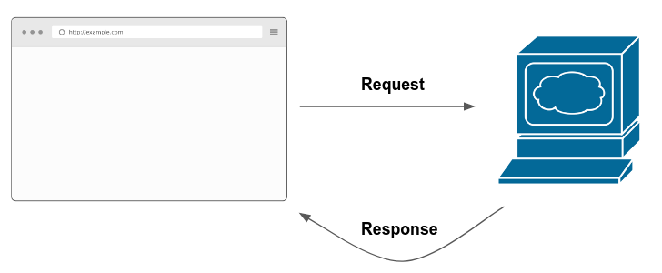
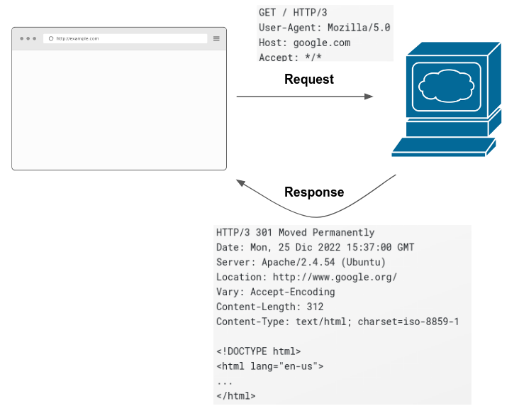

12 A dialogue between computers
With the advent of computing in the modern world, we’ve seen the surge of the shiny concept of ‘cloud computing’. The technical folks that work in the area know pretty well what ‘cloud’ means. However, even experienced users of the cloud often don’t know that ‘cloud’ is just another word for computer. The arcane phrase “we’re moving to the cloud” can actually be translate to “we’re moving our data to a computer hosted somewhere else in the world where professionals can take care of making backups of the data and if the computer breaks they can immediately launch a new computer with the backup copy of the data”.
This means that whenever you hear that your files are on the cloud (think of any Google/Microsoft service such as Word, Excel, etc..) there’s really no magic behind this: they are probably somewhere in a computer in the United States/Europe. But wait, it doesn’t end there. Every website in the world has a computer behind it that hosts the data and information showed in the website. Yep, that’s right. Every time you type a website into your browser (for example, www.google.com), your browser knocks on the door of the computer behind the website asking for the content to show you. Whenever the server responds back (and this is not instant, it might take from even a few milliseconds to half a minute) the browser prettifies the information and renders it for you. Here’s a visual depiction of how it works:
Rephrasing what I described above, the browser sends a request to the server behind the website.
12.1 Anatomy of a request
Chances are you’ve made over thousands of requests in your life without even knowing it. When you use the browser, the browser makes the request for you. However, in all previous webscraping examples in this book we actually made requests to the servers behind the website. You didn’t see it because we were running high level functions such as read_html or read_xml but these functions actually make a request for you to access the code behind the website.
What is a request? It’s a set of instructions that describe what you want. So the usual request that you send to a website looks like this:
GET / HTTP/3
User-Agent: Mozilla/5.0 (X11; Ubuntu; Linux x86_64; rv:105.0) Gecko/20100101 Firefox/105.0
Host: google.com
Accept: */*It describes several things:
- The type of request you’re making (
GET /HTTP/3). There are several types of request that we’ll describe next. - The
User-Agentor, in other words, who you are. This string describes the browser/computer that you’re using such that a website can identify you. - The host. This is the website you are requesting data from.
- The format that the request can accept. This is primarily for formats such as HTML, XML, JSON, etc.. In this case, since it has
*/*, it means the browser can accept any format.
A request contains extra information but we won’t delve into those in this introduction. In short, it contains ‘attachments’ called headers which contain options such as the supported encoding and other technical details. However, as an introduction, there’s no need for you to know these details right now.
As it is common for human interactions, a dialogue is between two parties. When your browser sends a request, it is expecting a response. When the computer/server responds back, it gives back an answer like this one:
HTTP/3 301 Moved Permanently
Date: Mon, 25 Dic 2022 15:37:00 GMT
Server: Apache/2.4.54 (Ubuntu)
Location: http://www.google.org/
Vary: Accept-Encoding
Content-Length: 312
Content-Type: text/html; charset=iso-8859-1
<!DOCTYPE html>
<html lang="en-us">
...
</html>The top of the response contains technical details associated with the response such as the date, the content length and the content type. The key part of the answer of the request is the bottom part:
<!DOCTYPE html>
<html lang="en-us">
...
</html>This part contains all the source code of the website. The browser then takes this source code and renders it for you in the browser. This is the basics of what happens when you enter a website:

This happens every time you click a hyperlink, a tab or a button inside a website. The web is a series of thousands of requests made every millisecond.
12.2 Types of requests
Nearly all requests that your browser makes for you are GET requests. GET requests ask for information and receive information back, as we saw in the previous section. The world of requests, however, has evolved over time and many other type of requests have been developed. Here are the most common ones:
GET: retrieves whatever information is identified by the URLPOST: requests data just asGETbut allows to enclose data in the ‘body’ of the request. That is, aside from the usual details from theGETwe saw above, it allows to enclose additional information that is often needed by a website to return information.HEAD: identical to GET except that the server MUST NOT return a message-body in the response. This means that the actual content of the response is not returned; only the response metadataPUT: request that creates a new resource or replaces a resource on the serverDELETE: deletes a resource on the server
These explanations are fine but we probably need some hand-on examples of how this works in practice. Suppose that you enter a website that orders food to your home. When you enter the website, your browser sends GET request to the servers behind the website and receives the content it will show you. The browser renders it and you can navigate the content freely. You spend about 15 minutes choosing which plate you’re gonna order. You finally click on ‘submit order’. What happens? You just sent POST request. What does that mean? Aside from the usual details of the GET request, the POST request also allows you to ‘enclose’ a body with a message. This body contains information needed by the server to be able to send a response back. In our food example, this POST request contains all the details of your order which are saved on the servers of the website and allow people at the kitchen start preparing your food. How does a POST request look like?
POST /test / HTTP/3
Host: foo.example
Content-Type: application/x-www-form-urlencoded
Content-Length: 27
main_plate=poke_bowl&drinks=waterThis POST request has a very similar format as the GET request we described above but has some extra content at the bottom which contains the body of the request. For our food example, this contains our order. PUT works very similar to POST but has one main difference: it can be used to create/update one thing. POST was created to make as many submits as you need. You can make 10 orders and each order on the website will be in addition to the other ones; no replacement is done on the previous orders. PUT is meant to create/update something as many times as needed. For example, when you enter the website, the developers might use PUT to show the currency exchange of the dollar-euro. Whenever it changes, they might update it again with PUT but completely erases the previous one. In general, these two ‘verbs’ are a way to submit information and receive a response based on this submission.
HEAD on the other hand is pretty much the same as GET but it is not supposed to return the response body. This is meant as a precaution in case the response has a lot of data, someone can filter and act accordingly using HEAD. The benefit of HEAD is that it cannot contain the body of the message but it contains information of the request, such as the content length.
Finally, DELETE is a request type that, as it’s name says, it requests a deletion of a resource in the server. This is the counterpart to POST. If you place 10 orders, each using POST, you can delete each one sending a DELETE request.
12.3 REST APIs
Why is this all important? Wasn’t this a chapter on APIs? All of the content above happens automatically behind the scenes, why should I care? Because requests are at the core of how APIs work. APIs work just as we described requests above:
However, the main difference is that REST APIs are designed to share data. REST APIs have their biggest objective as a way to share data that was traditionally gathered through web scraping. So in most instances, an API would return a JSON or an XML file with the data you requested in the body of the response. In webscraping, the requests return the source code of the website.
REST APIs organize the internal data of a website and share them using a standard interface following the REST guidelines. REST stands for “Representational state transfer” and is a standard architecture for sharing data.
Enough of technical descriptions, how do these REST APIs work? In layman terms, REST APIs have documentation which shows something called endpoints, just as we saw in chapter @ref(intro-apis). Each of these endpoints are connected internally to databases. Each endpoint is responsible for returning one set of data. Depending on which parameters you pass to the URL of a given endpoint, the endpoint filters data and returns results accordingly.
Other endpoints that have access to the data also allows to alter data. For example, the Spotify API, once you log in with your credentials and obtain a ‘token’ to access the API, allows you to remove playlists or add songs to particular albums. This is all done using requests such as DELETE or POST. Like in chapter @ref(intro-apis), each of these endpoints has documentation on how to access the data behind it.
This should sound familiar to how we described requests above, because it is very familiar. The idea is that APIs are persistent machines (they’re always on) that can support thousands of requests per minute from people requesting data. The data that you request from an API can change depend from parameters from the website. However, the key idea of this chapter is the APIs are computers that host data. You can speak to these computers using different types of requests and filter data from these requests using parameters in the URL.
12.4 Ethics in APIs
Even though companies are giving you data for free, this doesn’t mean we shouldn’t abide by some general guidelines on behavior. Ethical guidelines for APIs are very similar to the ones described in chapter @ref(ethical-issues) for web scraping. They can be summarized in bullet points:
Excessive requests: since APIs are just computers sending data, they have a finite amount of bandwidth they can use. Remember to use system sleeps to avoid cluttering the servers.
Read the terms of services: companies are sharing data freely over the web but this doesn’t mean you can do anything with it. Be sure to read the terms of services from the website as they might forbid something you can do with the data.
Authentication: as opposed to webscraping, where you usually just specify the
User-Agent, many APIs require authentication. This means that you need to log in or create a developer account on the website of interest and obtain a token. This token is used on every request you make to the API, validating that you have authenticated with the website. Make sure to do this every time it is needed, as it ensures that you can access correct information and the owners can control how requests data from their website.
12.5 Exercises
- Can you browse the internet and find out how to make a
GETrequest using R? Search for thehttr2R package.
- APIs often have something called rate limiting. Can you search online what it means? If you had a program that requests data from an API how could you control rate limiting?